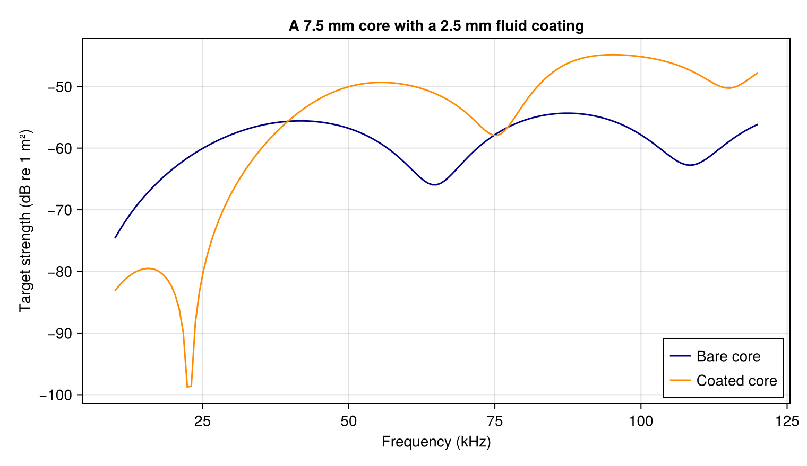
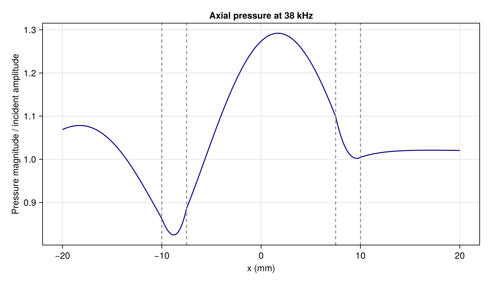

Scattering and pressure in a coated particle
Compare a fluid core with and without a fluid coating, then inspect the pressure through both layers. Keep the core radius and material fixed so the comparison isolates the addition of the coating. All material ratios below are illustrative.
Add a coating
using AcousticScattering
using CairoMakie: Figure, Axis, lines!, axislegend, vlines!, save
radius, ratio = 0.01, 0.75
sound_speed = 1500.0
core = FluidFilled(0.8, 0.9)
coating = Shelled(FluidLayer(1.4, 1.2), FluidInterior(0.8, 0.9), ratio)
frequencies = range(10000.0, 120000.0; length=161)
bare = frequency_sweep(k -> modal(Sphere(ratio*radius), core, k), frequencies, sound_speed)
coated = frequency_sweep(k -> modal(Sphere(radius), coating, k), frequencies, sound_speed)
figure = Figure(; size=(760, 440))
axis = Axis(figure[1, 1]; xlabel="Frequency (kHz)",
ylabel="Target strength (dB re 1 m²)", title="A 7.5 mm core with a 2.5 mm fluid coating")
lines!(axis, frequencies ./ 1000, bare.target_strength; label="Bare core", color=:navy)
lines!(axis, frequencies ./ 1000, coated.target_strength; label="Coated core", color=:darkorange)
axislegend(axis; position=:rb)
save("coated_spectrum.png", figure)
ratio is inner radius divided by outer radius. The layer and interior each take density and sound-speed ratios relative to the exterior fluid.
Look through the particle
solution = modal(Sphere(radius), coating, 2pi * 38000 / sound_speed; m_max=24)
x = range(-2radius, 2radius; length=401)
values = pressure(solution, [(position, 0.0, 0.0) for position in x])
field_figure = Figure(; size=(760, 440))
field_axis = Axis(field_figure[1, 1]; xlabel="x (mm)",
ylabel="Pressure magnitude / incident amplitude", title="Axial pressure at 38 kHz")
lines!(field_axis, 1000 .* x, abs.(values); color=:navy)
vlines!(field_axis, 1000radius .* [-1, -ratio, ratio, 1]; color=:gray, linestyle=:dash)
save("coated_pressure.png", field_figure)
The incident wave travels along +x. Dashed lines mark the interfaces. pressure automatically selects the exterior, coating or core. This is total pressure, so the exterior includes interference between the incident and scattered waves.
Check pressure continuity directly at the inner surface:
point = (ratio*radius, 0.0, 0.0)
inside = pressure(solution, point; field=:interior)
shell = pressure(solution, point; field=:shell)
@assert isapprox(inside, shell; rtol=1e-8)
(core_trace=inside, coating_trace=shell)(core_trace = 0.5924771616680685 + 0.9257552864200073im, coating_trace = 0.5924771616680694 + 0.9257552864200072im)Increase m_max when resolving higher frequencies. See Pressure at Cartesian points for field selection and units.